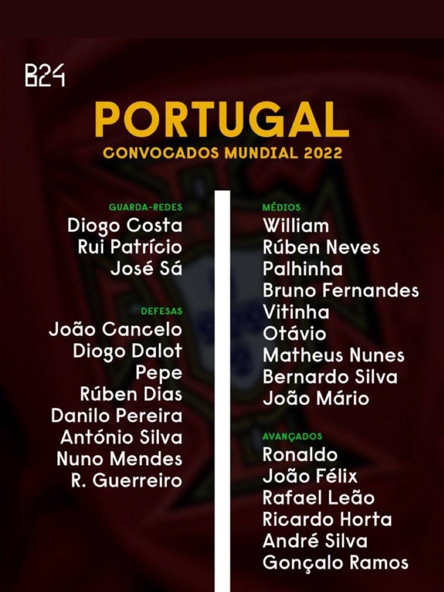
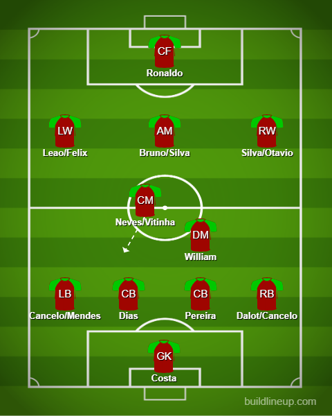

Squad Reaction - Portugal

On the left: Goalkeepers and Defenders On the right: Midfielders and Attackers
Stacked team. Ronaldo’s possible last dance. Isn’t in the greatest of form but will be expected to lead this team after their Euro win in 2016 and Nations League win in 2019. They have really good quality everywhere. They will miss Jota through injury but have good players instead of him. Starting at the back Diogo Costa has to start every game because he has been on it for Porto and recently signed a new contract. At the back, Pepe is injured but is picked anyways with no concrete return date. Let’s see how that develops. Instead of him, Danilo Pereira can do a job despite him being a CDM. He will be partnering Dias. However, there is a conundrum with the full backs. Dalot has been amazing for United and Cancelo has been no pushover for City either. Mendes is OTW at LB but I think I would rather see Cancelo at LB given that’s where he plays for City and Dalot at RB. Plus Dalot will have a game’s rest since he is suspended for the game before the tournament. Moving into Midfield we have options for the CDM in William and Palhinha and at CM we have Neves and also OTW in Nunes and Vitinha(Nunes is currently injured but will be back by the WC). Moving to the 3 behind Ronaldo, we have either Bruno or Silva at CAM, Leao or Felix at LW and Silva, Otavio and maybe Joao Mario as well for RW and Ronaldo is mostly going to be immovable at ST but for an option, Andre Silva could be a good option and maybe Felix as a false 9.
The lineup:
